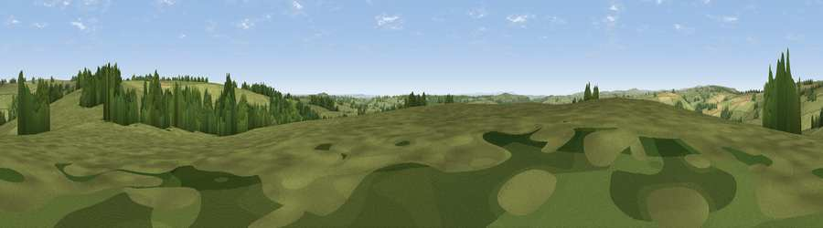

Viewpoint near Brompton Regis
#25142 in England · top 54% of its area beats it · near Brompton RegisThe view, rendered

A 360° render of this exact spot computed from the terrain model, tree cover and land cover — summer colours, afternoon light, calibrated against photographs of famous viewpoints. Real trees, hedges and buildings will differ in detail.
The panorama
Grey silhouette: terrain skyline in each direction (720 bearings, Earth curvature and refraction included). Dashed green: skyline with trees (+15 m) and buildings (+8 m) as obstacles. Blue strip: how far the ground is visible on each bearing.
Where the view opens
Wedge length = distance to the farthest visible ground on that bearing (vegetation-aware). Rings at 10, 25 and 50 km.
What fills the view
85% grassland · 11% woodland · 4% cropland
Angular shares of the visible panorama (visual magnitude), not map area. Landscape diversity 0.22 (0–1 Shannon).
Key numbers
More beautiful places nearby
The staircase of upgrades: each row has a higher view potential than everything closer. Driving times are estimates from straight-line distance, calibrated against real road routing — check an actual route before setting out.
| Place | Direction | Drive | Score |
|---|---|---|---|
| Viewpoint near Roadwater | NE · 2 km | ~6 min | 67.4 |
| Viewpoint near Luxborough | N · 3 km | ~7 min | 73.0 |
| Viewpoint near Roadwater | NNE · 4 km | ~9 min | 82.9 |
| Viewpoint near Roadwater | N · 6 km | ~13 min | 85.2 |
| Viewpoint near Luxborough | N · 8 km | ~16 min | 85.5 |
| Viewpoint near West Quantoxhead | NE · 15 km | ~27 min | 87.8 |
| Viewpoint near West Quantoxhead | NE · 15 km | ~27 min | 88.7 |
| Holdstone Hill | WNW · 41 km | ~60 min | 90.2 |
51.08460, -3.43301 · source: screening · position refined by local search. Computed location — check access rights before visiting.